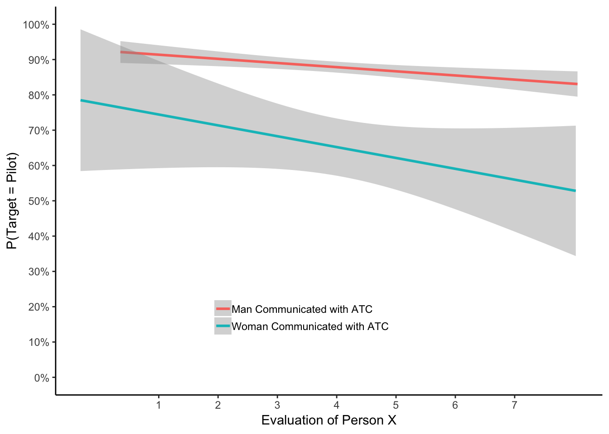

Graph Work
library(ggplot2)Cao et al. (2019)
# Create dataframe
a <- c(runif(8,0,70))
b <- c(runif(8,0,70))
plot_df <- data.frame(a,b)
# basic scatterplot
ggplot(plot_df, aes(x=a,y=b))+
geom_point()+
geom_smooth(method=lm)+
coord_cartesian(xlim=c(0,70),ylim=c(0,70))+
xlab("Average Frequency of Nonsocial Risk")+
ylab("Average Frequency of Social Risk")+
theme_classic(base_size=12)#Questions: how do you get rid of grey area, change the formatting of the line? Asking these questionsJeffereies (2019)
Evalofperson <- c(runif(10,0,7))
P_Target <- c(runif(10,0,1))
Gender <- rep(c("M","W"),5)
plot_df <- data.frame(Evalofperson,P_Target,Gender)
# basic scatterplot
library(ggplot2)
ggplot(plot_df, aes(Evalofperson, P_Target, shape=Gender, colour=Gender, fill=Gender))+
geom_point(size=3)+
geom_smooth(method=lm)+
coord_cartesian(xlim=c(0,7),ylim=c(0,1))+
xlab("Evaluation of Person X")+
ylab("P(Target=Pilot)")+
theme_classic(base_size=12)+
facet_wrap(~factor_three)library(ggplot2)
evaluation<-c((seq(1,7,.1)+runif(61,-2,2)),
(seq(1,7,.1)+runif(61,-2,2)))
pTarget <-c((seq(.92,.85,length.out=61)+runif(61,-.1,.1)),
(seq(.8,.4,length.out=61)+runif(61,-.5,.5)))
Gender <- rep(c("Man Communicated with ATC",
"Woman Communicated with ATC"), each=61)
plot_df<-data.frame(evaluation,pTarget,Gender)
ggplot(plot_df, aes(x=evaluation,y=pTarget,
group=Gender,
color=Gender))+
geom_smooth(method="lm")+
theme_classic()+
scale_y_continuous(breaks=seq(0,1,.1),labels = scales::percent)+
scale_x_continuous(breaks=seq(1,7,1))+
coord_cartesian(ylim=c(0,1))+
xlab("Evaluation of Person X")+
ylab("P(Target = Pilot)")+
theme(legend.position=c(0.45,0.2),
legend.title=element_blank(),
legend.key.size = unit(.5, "cm"))+
theme(legend.key = element_rect(colour = 'white', fill = 'white', size = 1, linetype='solid')) ```
Kim et al. (2019)
a <- c(runif(20,-2.5,5))
b <- c(runif(20,-20,30))
plot_df <- data.frame(a,b)
#Empathy
ggplot(plot_df, aes(x=a,y=b))+
geom_point()+
geom_smooth(method=lm)+
coord_cartesian(xlim=c(-2.5,5),ylim=c(-20,30))+
xlab("Social N400")+
ylab("Empathy Quotient Test")#Reading in the Mind
c <- c(runif(20,-2.5,5))
d <- c(runif(20,-8,8))
plot_df2 <- data.frame(c,d)
ggplot(plot_df2, aes(x=c,y=d))+
geom_point()+
geom_smooth(method=lm)+
coord_cartesian(xlim=c(-2.5,5),ylim=c(-8,8))+
xlab("Social N400")+
ylab("Reading the Mind in the Eyes Test")#Autism Spectrum Quotient
e <- c(runif(20,-2.5,5))
f <- c(runif(20,-10,20))
plot_df3 <- data.frame(e,f)
ggplot(plot_df3, aes(x=e,y=f))+
geom_point()+
geom_smooth(method=lm)+
coord_cartesian(xlim=c(-2.5,5),ylim=c(-10,20))+
xlab("Social N400")+
ylab("Autism Spectrum Quotient")
Jouravlev et al (2019)
factor_one <- rep(as.factor(c("No Transient","Transient")),2)
factor_two <- rep(as.factor(c("Outside","Inside")),2)
factor_three <- rep(as.factor(c("Visual Group","Auditory Group")),each=4)
dv_means <- c(305,302,290,275)
dv_SEs <- c(4,3.4,4,3)
plot_df <- data.frame(factor_one,
factor_two,
factor_three,
dv_means,
dv_SEs)
# basic bar graph
ggplot(plot_df, aes(x=factor_one,y=dv_means,
group=factor_two,
color=factor_two))+
geom_bar(stat="identity", position="dodge")+
facet_wrap(~factor_three)+
theme_classic(base_size=12)+
xlab("Condition")+
ylab("Mean Mediant RT (ms)")